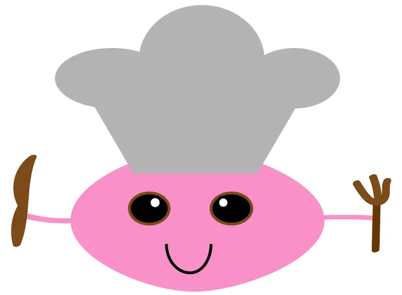

T4 Animation

I opgave 04.04.01 Temaopgave var det endelige mål at lave et brugbart spil med javascript og nogle designløsninger som gjorde at det var et nemt og forståeligt spil. Ved brug af CSS, javascript, Audition og Illustrator .I begyndelsen af processen anvendte jeg idegenerering teknikker, moodboards samt Style Tiles til at lave et fundament for mit endelige resultat. Derefter gennem aktivitetsdiagrammer, state machin diagrammer og skitseringsteknikker kunne jeg begynde at bygge grundlaget for mit spil og dets funktioner. Ved brug af Firefox Inspector blev jeg bedre til at se mine egne fejl og lærte derfor hurtigt at rette dem og kunne derfor nemmere komme videre med processen på egen hånd. Igennem det individuelle arbejde med projektet fik jeg researchet og udvalgt det CSS og Javascript som var relevant for mit eget spil og de funktioner som jeg i sidste ende ville frem til med mit spil.
Refleksion
Forløbet med grundlæggende animation var et meget spændende og lærerigt forløb. Personligt blev jeg testet på mine evner på en meget lærerig måde. Det var en rigtig god måde at lære om javascript da man gjorde noget til tider tungt arbejde til en sjov løsning. Aktivitetsdiagrammer og state machine diagrammer var en hjælpsom færdighed at få tilføjet til sin værktøjskasse. Ved brug af dem havde man konstant overblik over sin javascript og hvordan man skulle opstille sin kode til at få det resultat som man havde udtænkt sig. Det var også en ny måde at skildre mellem hvilken CSS og javascript der var relevant for ens animation og man lærte derfor at prioritere hvad der skulle bruges og hvad der var overflødigt.
